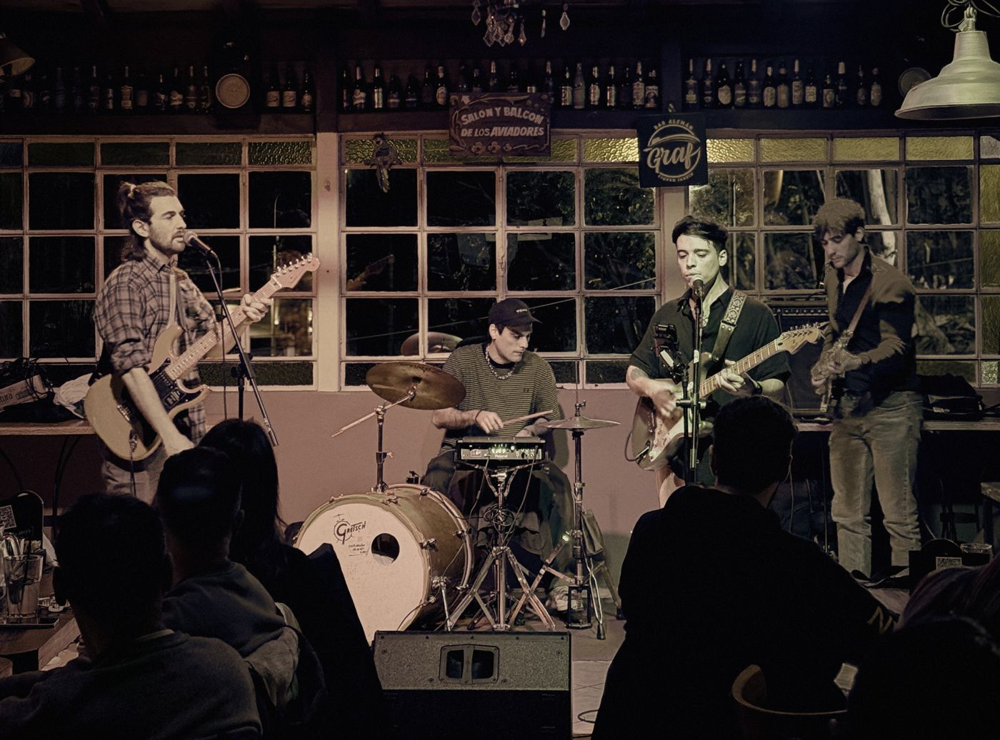
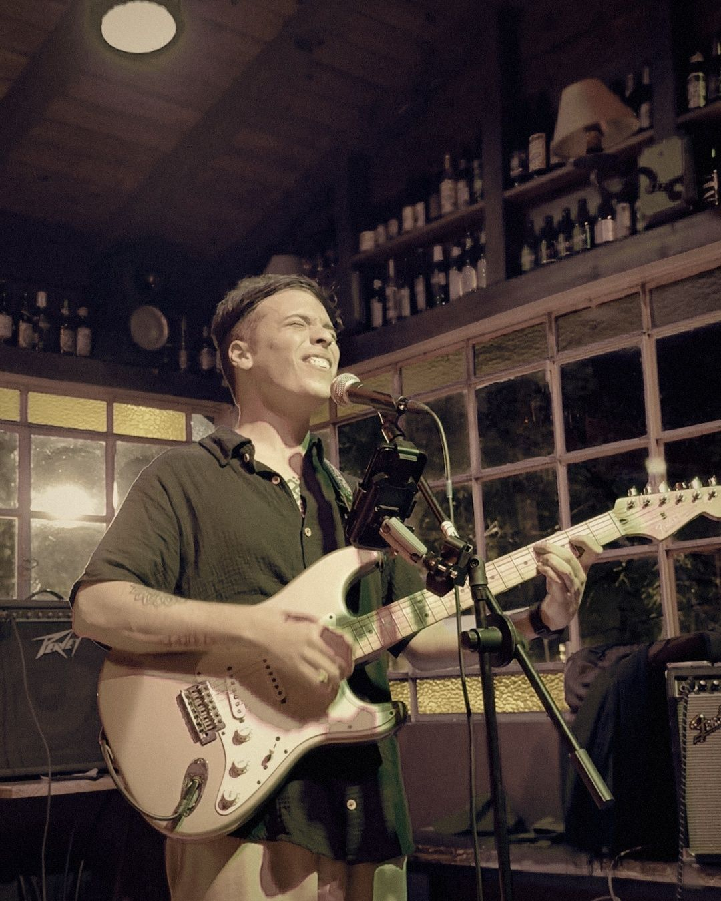
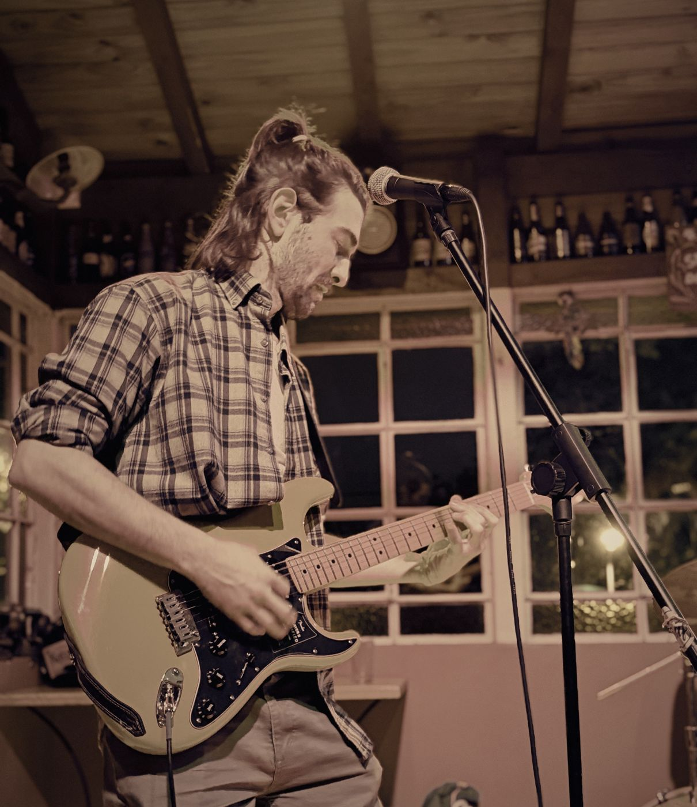
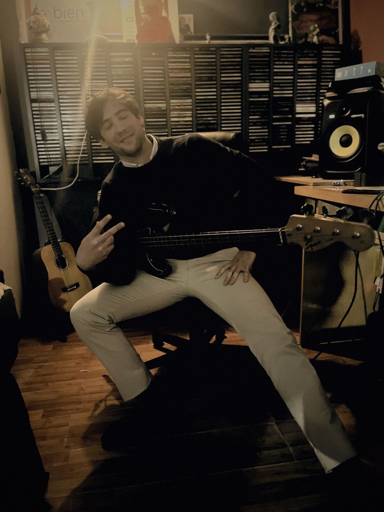
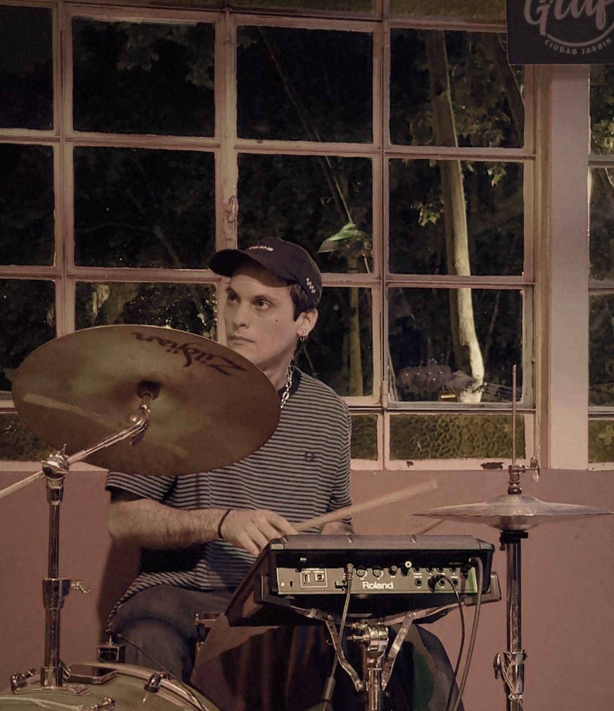

Dom22Nov
Casa Sonora · Ituzaingó
Rondeau 173 · 20 h · con AM Trio y Feliz Navidad Che
Rock de autor desde Ciudad Jardín. Cuatro amigos, canciones propias y coros a dos voces.
Rondeau 173 · 20 h · con AM Trio y Feliz Navidad Che
Abrimos la noche de Laura Hall
Esa puerta tiene su yeite: para cerrarla, empujás para arriba y después para adentro.





Yeite es una banda de rock de autor de Ciudad Jardín, en el oeste del conurbano. Son cuatro amigos del barrio que tocan canciones propias, con letras que van del agua y la tierra a la vida de ciudad, y una marca registrada: los coros a dos voces.
Su casa es Graf, el bar de Ciudad Jardín donde tocan seguido. Escuchan a Cerati, Spinetta, Bob Marley, The Beatles y Gorillaz.
| Canal | Fuente | Toma |
|---|---|---|
| 1 | Bombo | Mic de bombo |
| 2 | Redoblante | SM57 |
| 3 | Samples (pad) | Línea / DI |
| 4 | Bajo | DI |
| 5 | Guitarra Eze | SM57 al ampli |
| 6 | Guitarra Mati | SM57 al ampli |
| 7 | Voz Eze | SM58 |
| 8 | Voz Mati | SM58 |
Monitores: tres mezclas (voces, bajo y batería). Nos adaptamos al equipo de cada lugar.